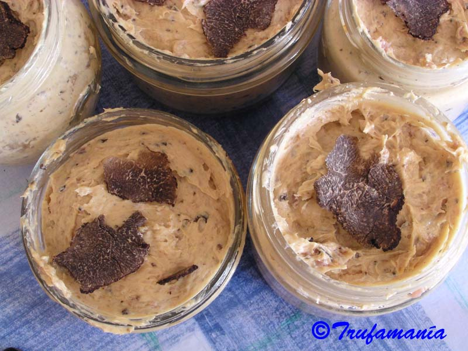
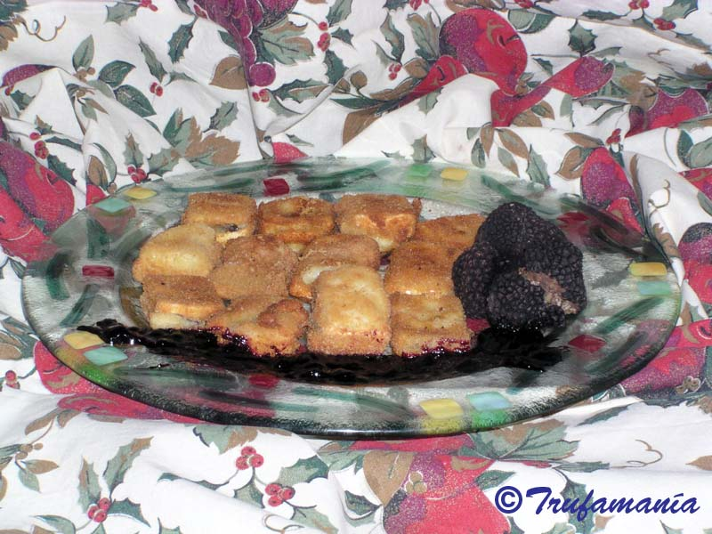

TRUFFLE GASTRONOMY
THE BEST TRUFFLES
The first thing to learn is how to tell apart the truffles sold in markets, so as not to be misled. From a gastronomic standpoint, there are two species available fresh in Spain: Tuber melanosporum and Tuber aestivum. Two further species can also be found as fresh imports, though not harvested in Spain: Tuber magnatum and Tuber indicum.
TUBER MELANOSPORUM (BLACK WINTER TRUFFLE)
This is the most widely harvested truffle in Spain and the one with the highest commercial value. Known in France as "Truffe du Périgord" and in Italy as "Tartufo nero pregiato". It is available fresh throughout the winter.

It is roughly globose, somewhat irregular, and highly variable in size. The outer surface is black, with reddish-brown tones when not fully ripe, and is entirely covered with pyramid-shaped warts. Cut in half, an unripe truffle is white inside; as it matures it darkens, turning deep brown and finally purplish-black. It is marbled with numerous thin, white veins, which may fade or disappear altogether in a very ripe truffle or after heavy frosts. Its fragrance is powerful, penetrating and highly distinctive, varying with the state of ripeness and influenced by rainfall, soil type and frost. Despite my years as a truffle hunter, I find its aroma almost impossible to describe faithfully. All I know is that it awakens all the senses the moment I hold one. When I ask other hunters, friends and cooks, they say it evokes woodland soil, sea salt, iodine, damp undergrowth, cockles... We always reach for comparisons, yet never quite pin it down. It is as captivating to some as it is off-putting to those who encounter it for the first time. The taste is pleasant, distinctive, faintly bitter and subtly spiced.
There is a truffle similar in appearance to Tuber melanosporum, harvested at the same time: Tuber brumale. It is often sold mixed with Tuber melanosporum, but is of considerably lower quality. It can be told apart by the way its skin flakes off when brushed during cleaning, and by its different aroma.
TUBER AESTIVUM (BLACK SUMMER TRUFFLE)
Known in Italy as "tartufo nero estivo". It is harvested mainly in summer. Its outer surface is similar to Tuber melanosporum — black skin and pyramidal warts — but the warts are larger.

It is less dense than the black winter truffle and tends to reach a larger size. The interior is white when unripe, turning hazelnut brown as it matures — never black. Its scent is mild, reminiscent of roasted malt, with a gentle flavour evoking nuts such as walnuts and hazelnuts. The summer truffle is considered of good quality and can be used in the same way as Tuber melanosporum.
TUBER INDICUM
The Chinese truffle, of little culinary value due to its negligible aroma and flavour. Its appearance is very similar to Tuber melanosporum, but the texture is rubbery, and it is frequently used in restaurants as a fraudulent substitute. Its price is much lower.
TUBER MAGNATUM (WHITE TRUFFLE)
The Italian "Tartufo Bianco d'Alba". Harvested mainly in autumn, it has not yet been found in Spain. Its surface is smooth and lightly velvety, pale ochre to dark cream or greenish in colour. Its aroma — a complex blend of methane and garlic notes — is highly volatile, which is why this truffle must never be cooked; it should be shaved or grated raw over hot dishes at the moment of serving. The heat from the food is sufficient to release its fragrance. It is the most expensive truffle in the world, fetching over €4,000 per kilogram, and is very difficult to find on the Spanish market.
THE BEST TIME TO BUY
Canned, frozen and dried truffles are available year-round, but here we focus on fresh consumption, which is by far the best way to appreciate their aroma.

Tuber melanosporum
Available throughout the winter. It is at its best from mid-January to late February.
Tuber aestivum
Harvested mainly in June and July, though it can be found at other times of year as well. From October to December, a more aromatic variety becomes available: Tuber uncinatum, the Burgundy truffle.
Tuber brumale
Harvested at the same time as Tuber melanosporum and frequently sold mixed with it.
CLEANING TRUFFLES


Truffles should be washed under running water just before use. Washing them earlier shortens their shelf life. Dedicated truffle brushes are available; a toothbrush or nailbrush works just as well. Pay particular attention to the crevices formed by the irregular surface and remove all traces of soil and grit.
Once clean, and before drying, inspect each truffle carefully and cut away any damaged areas or parts showing signs of larvae. A single neglected truffle can quickly start to decompose and spoil the rest.
Dry thoroughly with kitchen paper or with a hairdryer set to cold air.
PRESERVING TRUFFLES
Once you know the aroma of fresh truffles, no preservation method will seem truly satisfactory, since none fully maintains their texture and fragrance. We therefore recommend eating them fresh, especially the black winter truffle (Tuber melanosporum). That said, if you wish to make the most of a good find and enjoy truffles out of season, some form of preservation is necessary. There are many methods; here we cover the most practical for small quantities.

Short-term fresh storage: The black winter truffle (Tuber melanosporum) keeps for no more than 10 days in the fridge. Store in an airtight container, each truffle wrapped in absorbent paper to control excess moisture. Change the paper every two days or so to prevent rotting. Truffles respire, so open the container for a few minutes each day to allow air circulation. The black summer truffle (Tuber aestivum) keeps considerably longer and can remain in good condition for over a month.
Preserving in vinegar, spirits and oils: widely used and practical methods. Submerge truffles in a mild vinegar such as apple cider vinegar, dry sherry or brandy at a ratio of approximately 20 g per litre; after a couple of months the infused liquid can be used in a wide range of recipes. The truffles themselves will eventually dry out and lose their aroma, at which point they are no longer useful. The infused liquids work well in salads, vinaigrettes, soups, stews and, if you like, in a carajillo (coffee with a splash of brandy). For truffle oil, use a mild extra virgin olive oil, sunflower, walnut or peanut oil at a ratio of 20 g per litre. There are two approaches: you can add grated or chopped truffle directly to the oil, which must then be kept refrigerated; or you can steep a whole truffle in the oil, strain it after a few days and use the truffle separately in other recipes. IMPORTANT NOTE: We do not recommend oil as a preservation method for truffles, as the truffle will eventually spoil and there is a risk of botulism from the anaerobic conditions created by the oil. You may infuse oil with truffle as you would with any other fatty ingredient, but the resulting oil must be kept refrigerated and consumed within a short time. Heating the oil in a bain-marie reduces the risk but does not eliminate it entirely, since the spores of Clostridium botulinum, the bacterium responsible for botulism, can survive temperatures of 100°C for several hours.
Truffles in their own juice: Place cleaned truffles in a glass jar and cover with water, brandy, white wine, sherry or Port. Seal tightly and cook in a pressure cooker for 30 minutes. Stored in the fridge, the truffles will keep for up to a year.
Freezing: Clean the truffles, wrap each one tightly in foil and place in an airtight glass jar. Store in the freezer.
Drying: The longest-lasting preservation method. We would only recommend this for the summer truffle, as most of the aroma is lost in the process. The summer truffle has little fragrance but a very pleasant taste, and drying intensifies its flavour. Once dried, truffles can be ground to a powder and used as a seasoning, or kept in slices for use in stews, sauces, soups and croquettes.
Canned truffles: If fresh truffles are unavailable, canned truffles can be found on the market, usually in jars containing 10 to 12 g.

Always read the small print and check whether the product is first or second boiling. First-boiling truffles are canned raw and then sterilised, retaining all their juice. Second-boiling truffles are boiled once to extract part of their juice, then canned and sterilised again — undergoing two cooking processes and losing almost all their flavour as a result.
It is also important to check the label carefully to avoid being misled into buying a Chinese truffle under the guise of a genuine black winter truffle. The scientific name is the only reliable guide. Many species of very different culinary value are sold under the generic common name of “truffle”.
Scientific name: Tuber melanosporum, Tuber nigrum. Common name: black winter truffle, black truffle.
Scientific name: Tuber aestivum. Common name: summer truffle, Saint Jean truffle, white truffle.
Scientific name: Tuber brumale. Common name: winter truffle, violet truffle.
Labels sometimes bear names such as “black truffle”, “winter truffle” or simply “truffle”, while the scientific name given is Tuber himalayense or Tuber indicum. These may resemble Tuber melanosporum in appearance, but they are Chinese truffles with no comparison to the genuine black winter truffle.
COOKING TRUFFLES
To speak of truffles is to speak of cooking: the truffle owes everything to the kitchen, and the kitchen owes a great deal to the truffle. Already highly prized at the tables of ancient Greeks and Romans, truffles have been associated with aphrodisiac properties ever since.

In the Middle Ages the truffle fell into obscurity, only to return to the table in the nineteenth century. No one did more to establish its fame in the culinary world than the celebrated French gastronome and writer Brillat-Savarin (1755–1826), author of The Physiology of Taste. It was he who coined the famous phrase “the truffle is the diamond of the kitchen”, and who asked why it deserved such an honour. His conclusion was clear: there is no other ingredient that serves simultaneously as food and condiment while reaching such heights of gastronomic and commercial value. He attributed its prestige in part to the widespread belief of his day in its aphrodisiac properties, ultimately arriving at his celebrated verdict: “The truffle is not a true aphrodisiac, but on certain occasions it makes women more tender and men more agreeable”.
The black winter truffle (Tuber melanosporum) should always be used as a flavouring, never as a main ingredient. Freshly harvested and used raw whenever possible. As little as 100 g is enough to make several recipes and fully appreciate what the truffle has to offer. It is advisable to store the truffle in contact with the ingredients to be flavoured for at least 24 hours before cooking. Bear in mind that truffle aroma is highly volatile and binds to fat. Cook it briefly and combine it with fatty ingredients to fix and preserve its fragrance.
How to flavour food with truffles
Place the food and the truffle together in an airtight container, seal it and leave for at least 24 hours in a cool place. The richer in fat the food is, the more aroma it will absorb. Then prepare the food as you normally would. There are countless recipes in which truffle plays the starring role, but the simpler the preparation, the better the truffle aroma will come through.

We recommend starting with truffled eggs. You will see for yourself how the truffle aroma is able to pass through the porous eggshell and settle in the yolk.
Truffled eggs
Place half a dozen eggs in an airtight container with a fresh truffle, previously washed and loosely wrapped in absorbent paper. Seal the container and leave it in the fridge for two days. The high porosity of the eggshell will allow the interior to become infused with the truffle aroma. The eggs can then be used to make a truffled flan, added to any stuffing, or simply served fried with thin truffle slices on top. A true delight.
TRUFFLES AND WINE
Truffles love vineyards. The truffle mycelium naturally colonises vineyards near the woodland where truffles grow wild, benefiting from the well-tended soil. In Piedmont, Tuber magnatum was once treated as a pest until phylloxera destroyed the region’s vines. Much of the land was subsequently abandoned, and the truffle spread unchecked. Today, Tuber magnatum fetches over €4,000 per kilogram.

This historic rivalry between truffle and vineyard does not, however, translate into any incompatibility between truffle and wine. The full flavour of a truffle cannot truly be savoured without the right wine to accompany it — finding that match is a personal quest with a strong element of pleasure. Mild-flavoured truffles such as Tuber aestivum call for different wines than assertive ones like Tuber melanosporum, and the choice will also vary depending on whether the truffle is the centrepiece of the dish or a supporting flavour.
Tuber melanosporum: The finest way to appreciate its flavour is fresh and raw, sliced paper-thin and dressed with good oil and a pinch of salt — naturally, using truffles at peak ripeness, harvested in January and February. On the palate, it evolves from an initial spiced note through to a long hazelnut finish with a delicate hint of bitterness. Its flavour is very persistent, and it calls for wines with an equally long finish. A white wine should be barrel-fermented; a red wine should be rich in polyphenols. Syrah and oak-aged reds work very well. For us, a fine Jumilla red is an exceptional pairing.
OUR SUGGESTIONS
Using truffles in the kitchen is simpler than it might seem, and the results can be extraordinary. We recommend starting with the most straightforward preparations, which allow the truffle’s remarkable aroma to take centre stage. Here are a few ideas:
Toast with truffle oil
Cut the bread into slices and toast. Drizzle with truffle oil, add thin truffle slices and season with salt to taste.
Truffled fried eggs
The simplest recipe, and one of the best for appreciating truffle aroma. Use eggs prepared as described above. Fry the eggs and place on a warmed plate. Immediately shave thin truffle slices over the top and wait about 30 seconds. The heat from the eggs is enough to soften the truffle, releasing its aroma into the entire dish.

Truffled duck liver pâté
Ingredients: 1 duck liver, 1 duck breast, 40 g grated black winter truffle (Tuber melanosporum), 2 tablespoons of Port wine. Salt, pepper, nutmeg and clove to taste.
Before preparing, keep the truffle together with the liver and duck breast for 48 hours in a tightly sealed container in the fridge.
Preparation: Season the duck breast and sear on a hot griddle until lightly browned. Meanwhile, mash the liver with a fork, removing the veins. Once the duck breast is browned, remove the skin and blend with a food processor. Combine with the liver and mix well, adding the salt, pepper, nutmeg, clove, Port and truffle. Continue mixing until the texture is smooth and uniform. Fill sterilised glass jars with the pâté and seal tightly. Place in a pressure cooker with water reaching about one fifth of the way up the jars. Seal and cook for 10 minutes. Allow to cool before removing the jars.
{kind=link}

Breaded cheese with summer truffle
Ingredients: Brie cheese, summer truffle, flour, egg, breadcrumbs and oil.
Preparation: Cut the cheese into slices approximately 0.5 cm thick. Slice the truffle thinly and place the slices between two pieces of cheese. Coat in flour, beaten egg and breadcrumbs. Fry in very hot oil until golden. Drain on kitchen paper to remove excess oil and serve warm. A forest fruit jam makes an excellent accompaniment.
{kind=link}

LINKS
Truffled eggs my way (Spanish)
 | Encarna Buendía trufamania@gmail.com encarna@trufamania.com |